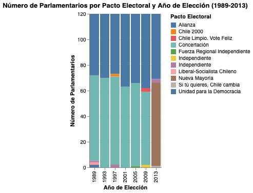
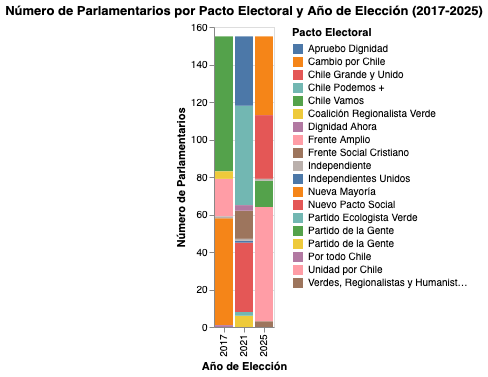
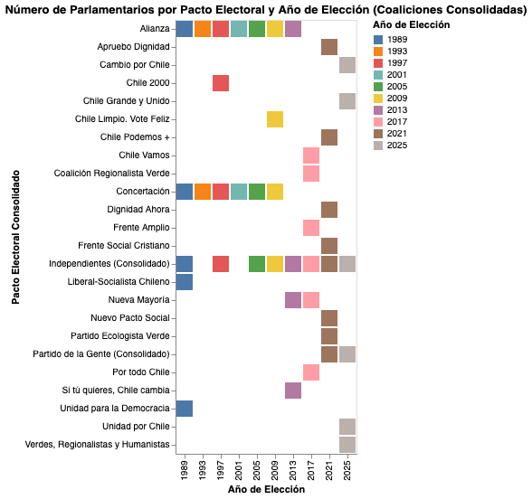

WEBSTORY · POLÍTICA CHILENA · 1989–2025
Desde el retorno a la democracia, la representación política en Chile ha experimentado profundas transformaciones. Lo que comenzó como un sistema dominado por dos grandes coaliciones evolucionó, tras la reforma electoral de 2017, hacia un Congreso con múltiples fuerzas políticas compitiendo por la representación ciudadana. Esto se explica porque el funcionamiento de estos dos mecanismos es completamente diferente. El sistema binominal (1989-2017) se caracteriza porque en cada distrito (60) normalmente se elegían 2 representantes (120 en total); lo favorecía a los dos grandes bloques políticos como la Concertación y Alianza. Era muy difícil que partidos pequeños obtuvieran escaños; eso se puede ver en resultados de elecciones bajo este sistema. Incluso una lista que ganaba podía terminar con la misma cantidad de representantes que la segunda lista, salvo que la duplicara en votos. En el sistema proporcional (2017-actualidad), los representantes se asignan según el porcentaje de votos que obtiene cada partido o lista. Si un partido recibe más votos, obtiene más escaños en proporción, lo que permite una representación más diversa y facilita la entrada de partidos pequeños o independientes, lo que es como una cascada de votos.
La Concertación y la Alianza representaron el orden institucional y el control legislativo por casi tres décadas bajo las rígidas reglas del equilibrio binominal. Mientras que la Concertación se caracterizaba por tener partidos políticos de corte más progresista, comprometidos con los derechos humanos y la democracia. La Alianza, bloque que convocaba a partidos políticos de la derecha tradicional, se caracterizaba por un negacionismo a acontecimientos de la dictadura, e incluso cierto fanatismo en los sectores más extremos de la época como la UDI. Hoy los partidos que ocupan ese lugar son el Partido Nacional Libertario, Social Cristiano y Republicano, cambiando el esquema de ubicación de los partidos de la derecha chilena.
Pero con la llegada del Frente Amplio el escenario dentro de la Cámara Baja del Congreso cambió totalmente, esta colectividad por ese entonces se instaló con bastante peso dentro del parlamento en 2017 con el recién llegado sistema proporcional. Con este elemento, se rompió el duopolio electoral de Chile Vamos (exAlianza) y la Nueva Mayoría (exConcertación), Pronto se sumarían partidos políticos de todos los espectros como el Republicano, Social Cristiano, de la Gente, Nacional Libertario. Ofreciéndole a la ciudadanía una amplia gama de representación política.
A finales de los años ochenta, con la caída del régimen militar de Augusto Pinochet, los actores políticos chilenos afrontaron una gran misión: reconstruir los partidos políticos y reorganizar las coaliciones que agruparían a estas fuerzas tras 17 años de dictadura. En aquel escenario surgieron dos grandes bloques políticos que lideraron las elecciones parlamentarias de 1989. La Concertación, bloque liderado por la Democracia Cristiana (DC) y acompañado por el Partido por la Democracia (PPD), Partido Socialista (PS), Partido Radical (PR), Partido Social Demócrata (PSD), Izquierda Cristiana (IC), Movimiento de Acción Popular (MAPU), Partido Liberal (PL), Partido Humanista (PH), Los Verdes y Alianza Centro. Y la Alianza, bloque liderado por Unión Demócrata Independiente (UDI), Renovación Nacional (RN) y partidos que fueron variando con los años, como Partido Nacional (PN), Unión de Centro Centro (UCC) y Partido del Sur.
En este ambiente refundacional nacieron los grandes pactos nacionales encargados de competir en las urnas parlamentarias de 1989, inaugurando un ciclo normado por reglas electorales restrictivas.
Años de dictadura precedieron la reorganización de las fuerzas parlamentarias en Chile.
La Concertación nació como una coalición de centroizquierda imbatible durante más de 5 elecciones parlamentarias. Su éxito radicó en una disciplina interna estricta y una ingeniería electoral óptima para la lógica del binominal, alcanzando 70 de los 120 escaños en las elecciones de 1993, demostrando su hegemonía dentro del Congreso Nacional.
Su contraparte opositora de centroderecha, La Alianza (UDI y RN, otros) también consolidó 50 escaños, sepultando de forma matemática cualquier intento de partidos independientes o fuera del binomio por entrar al Congreso, eran prácticamente los dueños del sistema político chileno, concentrando todo el poder en dos grandes fuerzas atomizadas, algo impensable en la actualidad.

V 1: El gráfico de barras muestra la prolongada estabilidad de dos coaliciones con el sistema binominal.

V 2: El gráfico de barras muestra el aumento de coaliciones con el sistema proporcional.
A lo largo de los noventa y los dos mil, los dos grandes bloques clausuraron la representación del Parlamento. En 1993 la Concertación expandió su presencia legislativa a 70 parlamentarios, disminuyendo al mínimo la competencia exterior.
Este duopolio perduró de manera estable durante siete procesos eleccionarios sucesivos, con raras excepciones geográficas marginales o candidaturas de carácter estrictamente personal.
Haz clic en cada año electoral para seguir la progresión:

Visual 3: Cronología interactiva que exhibe el nacimiento, mutación y fin de los pactos en el hemiciclo.
No todos los bloques lograron resistir el peso de las urnas. La ley de partidos políticos chilena establece castigos rigurosos para aquellas colectividades que no alcancen los quórums de votación mínimos requeridos por elección (como el 5% de votos válidos o la elección de al menos 4 parlamentarios), dictaminando su disolución inmediata.
Esfuerzo de centroderecha independiente que desapareció de forma abrupta tras no consolidar presencia institucional estable frente a los grandes bloques.
Coaliciones de corte ecologista y humanista sufrieron disoluciones recurrentes por ley al no lograr consolidar el porcentaje mínimo en múltiples distritos.
La mutación definitiva de la Concertación en 2013 marcó el término legal e histórico del bloque tradicional tras las tensiones de su propio eje político.
En 2017 se puso fin definitivo al histórico Sistema Binominal, implementando un nuevo régimen electoral de carácter proporcional. Este cambio de reglas de juego barrió con los incentivos que forzaban la unidad histórica de los grandes bloques institucionales.
Distritos electorales
Diputadas y diputados reales
Pactos con escaños ganados
El naciente entorno proporcional flexibilizó las exigencias de entrada legislativa. El Frente Amplio se convirtió en el principal catalizador de esta reforma en 2017, consolidando un hito al obtener 20 diputados en la Cámara.
Esta irrupción alteró irreversiblemente la correlación de fuerzas de la izquierda chilena, demostrando de forma empírica que el binomio tradicional de poder ya no controlaba de manera exclusiva las llaves de acceso parlamentario.
"El sistema binominal tendía a forzar pactos; el nuevo sistema proporcional abrió la compuerta a la diversidad... y con ella, a una aguda atomización partidista."
Haz clic en el simulador para reproducir de forma visual cómo el Congreso atomizó su representación en los últimos ciclos políticos:
La comparación directa entre las fuerzas presentes en el Congreso de 1989 y la atomización de 2025 ilustra de forma clara la transición desde un duopolio ordenado a un mosaico complejo.
Hoy en día, las dos alianzas gobernantes históricas carecen del control absoluto de las votaciones. Colectividades con identidades específicas o liderazgos de carácter marcadamente personalista modificaron las dinámicas internas de debate en la Cámara.
La composición parlamentaria actual ofrece mayores niveles de representatividad, pero el constante desborde de fuerzas impone desafíos severos a la gobernabilidad y la construcción de acuerdos nacionales firmes.